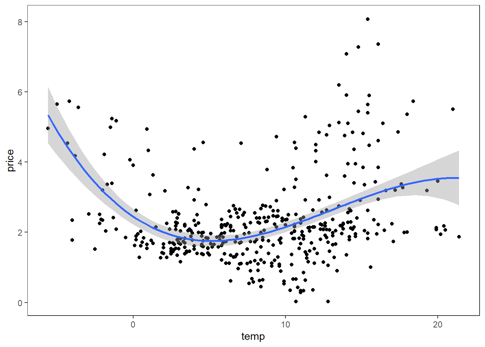
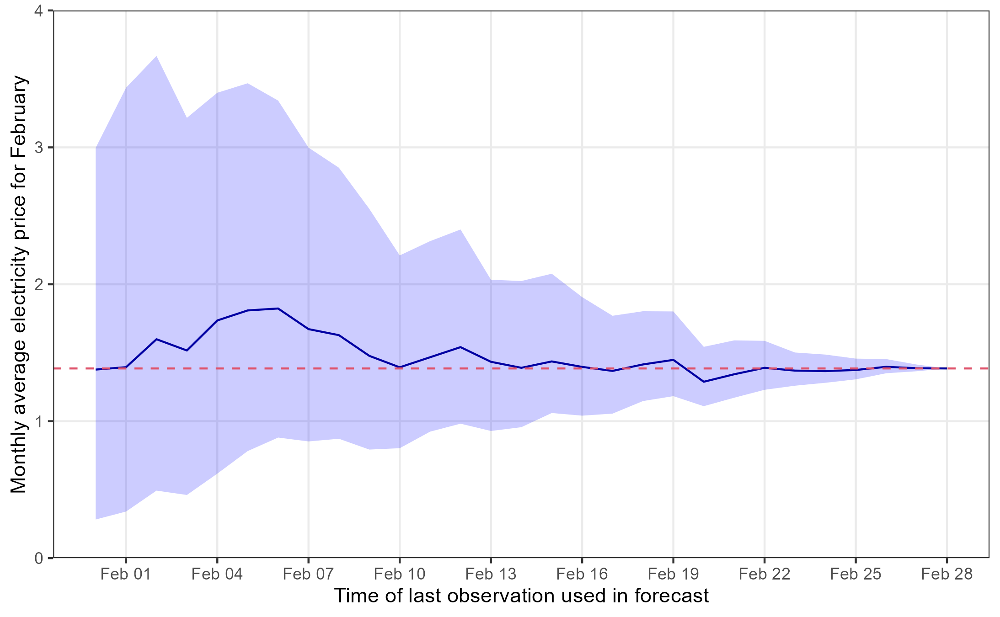

elprices <- readr::read_csv(
"https://raw.githubusercontent.com/martinju/stromstotte/master/data/database_nordpool_daily.csv")Electricity prices
Electricity prices in Western Norway
Traditionally, Norwegian electricity consumers have been blessed with low electricity prices due to the vast access to hydro power from the many Norwegian waterfalls. This has been a competitive advantage for Norwegian industry. But some time ago this changed and we have seen a large increase in electricity prices. This has led the Norwegian government to implement a monetary support scheme for Norwegian private households. The scheme is based on the monthly average price and covers 90% above 0.70 NOK/kWh excluding taxes (mva). The problem with this scheme is that the monthly average price is not known before the month has ended, so at the time of consumption, the consumers of electricity do not know how much governmental support will be and there how expensive the power is. Since the scheme does not take into account the spot price there can be times with negative prices after taking into account the governmental support. Say the monthly average is 2.7 NOK, then the support will be 0.90\cdot (2.7-0.7) = 1.80 NOK/kWh.
It can therefore be useful to have a forecast model to have an idea of what the governmental support will be. Towards the end of the month we will have a quite good idea of what the average price will be, but at the beginning of the month it will be quite uncertain.
Media houses such as VG and Aftenposten present estimates of the support by simple moving averages (so far in the month), but Martin Jullum, a statistician at the Norwegian Computing Center, has developed a more sophisticated forecasting model presented at dinstrompris.no (only in Norwegian). The approach he is using is based on dynamic regression model with ARIMA errors that simulates the rest of the month 10 000 times and calculates an average based on that. In this exercise, we will end up with a version of his model.
Although we may have negative electricity prices (free electricity!) for a few hours in a day, this is highly unlikely to happen on the daily average price and has not happened in the data we will be using. You may therefore assume non-negative daily electricity price if you find that necessary.
Exploratory analysis
We download the data from Martin Jullum’s github repository using the following code
Note that the data is updated daily. The data contains three columns:
- area: Nordpool price region (NO1, NO2, NO3, NO4 or NO5)
- date: date in %Y-%m-%d format
- price: Average daily price in NOK per kWh
Western Norway is pricing region NO5.
The goal of this workshop is to build a model that can forecast the monthly average electricity price for February 2023 using daily observations. From that, we can also give an estimate of the Governmental support scheme. We will use January 2023 as our test set (for comparing different model classes) and February 2023 is the month we will apply our forecast model on.
- Load the data and select only pricing area NO5. Create a training set containing observations up to and including Dec 31st 2022 and a test set with observations in January 2023. Also create a set called feb23 containing February 2023. All these data sets should be tsibble objects.
Explore the data using suitable graphics. Look for trends and season and comment on what you find.
Do a decomposition using a suitable decomposition method with weekly seasonality. Compare different options for the decomposition method. Comment on the trend and seasonal component. Are they reasonable? Why? Or why not?
We know that electricity demand is correlated with temperature. On colder days we need more heating which increase demand. Increased demand should also increase the price of electricity.
- Could daily average temperature in Bergen (at Florida) be a potential predictor candidate for the electricity price? Below is a scatterplot with price on the y-axis and Bergen average temperature on the x-axis. Comment on the relationship. Would forecasting with temperature as predictor be an ex ante or ex post forecast? Elaborate.

Model selection
In this exercise we focus on ETS and ARIMA models and use AICc as our model selection criteria within each model family. We first seek to find the best ETS model and do ARIMA afterwards.
ETS
Use the automated ETS model selection in the fable package and print the report. Write up the model equations with estimated values.
Plot the residuals ACF and histogram. Are there any problems with these residuals? Do a Ljung-Box test including lags up to 10.
ARIMA
- Estimate the optimal \lambda parameter using the Guerero method. Based on the estimated \lambda parameter, is the box-cox transformation far from a log-transform? Make a plot including the box-cox transformed and log transformed. Include also the log(1+price) transformation.
We could have compared the different transformations by evaluating their performance on a test set, but for simplicity we stick to the log(1+price) transform. What is the main consequence for the forecasting model based on this assumption?
We have decided on a suitable transformation. Is the transformed time series stationary? Is differencing necessary? Use the unitroot_nsdiffs and unitroot_ndiffs to select the number of differences. Plot the differenced series and visually confirm that the differenced and transformed series is stationary using gg_tsdisplay() with plot_type = “partial”.
Suggest some model candidates based on the ACF and PACF plots in the previous exercise. Fit the model candidates along with three automatically selected models:
- Stepwise = TRUE and approx = TRUE
- Stepwise = FALSE and approx = TRUE
- Stepwise = FALSE and approx = FALSE
Compare the methods using AICc as criteria. Which model would you choose? Create a fit object with only this model and call it fit.
Check the model assumptions using the gg_tsresiduals() function on the fit object from the selected model. Perform a Ljung-Box test and conclude. Are the assumptions fulfilled? What are the required and “nice-to-have” assumptions? Would you assume normality for producing prediction intervals in this case?
Print the report for your selected model. Based on the report, set up the model equation using the backshift notation.
Based on the equation in the previous exercise, find an expression for the first point forecast (\widehat y_{T+1|T}).
Martin Jullumn’s model on dinstrompris.no is a dynamic regression model with a categorical weekday dummy and ARIMA errors. Fit such a model a compare it with the ARIMA model of choice so far using an accuracy measure of choice (e.g. RMSE). Use a 4 weeks forecast horizon (same as length of February). Jullum do not use any transformations in his model so our model will be different. See code hint below for how this model can be implemented. Check the residual plots for the best model.
Code hint:
model(
jullum = ARIMA(log(1+price) ~ wday(date, label = TRUE), approx = FALSE, stepwise = FALSE)
)Forecasting average monthly price
We will now set up a Monte Carlo simulation for forecasting the average monthly electricity price for February. We simulate daily February prices from the best model and caluclate the monthly average price. This gives us a simulated sample of monthly average price of February and we can estimate the forecast distribution of that variable.
- We continue with the best model based on the test set performance above. We have found our forecasting model, now it is time to set it into action. Imagine that it is January 31^{\text{st}} 2023 today, and we want to forecast the monthly average electricity price for February 2023. We will complicate this further in the next question, but start refitting the selected model using observations including Jan 31st 2023. Plot a forecast for daily prices in February. Does the forecast behave as you expect? Generate 500 potential February prices from the fitted model. Calculate the monthly average price for each of the simulations (should give 500 average February prices). Present the mean, standard deviation and 95% prediction interval for the monthly average price.
Code hint:
fit %>% forecast(h = 28) %>% autoplot()
# Simulate:
sims <- fit %>% generate(h = 28, times = 500)
sims %>%
index_by(month = ~yearmonth(.)) %>%
group_by(.rep) %>%
# Calculate monthly average price for the simulations
summarize(average = mean(.sim)) %>%
ungroup() %>%
# Monte Carlo estimates:
summarize(
mean = mean(average),
sd = sd(average),
lwr = quantile(average, prob = 0.025),
upr = quantile(average, prob = 0.975)
)- In this final exercise, we pretend that the we are doing the same thing as dinstrompris.no. We start from Jan 31st of 2023 with the mean, standard deviation and 95% prediction interval from exercise 14 (i.e. the forecast of the average price for February). Then a day goes by, it is now Feb 1st and we know the daily average price of Feb 1st, so we update our model with the new information and produce a new forecast for the remaining 27 days of the month and produce a mean, sd, prediction interval for the average price of the full month, where 1 day is observed and the rest is simulated. Continue adding days and updating the forecast until all days of February are observed. Create a nice graphic similar to the one below. Explain the behavior of the forecast we see in the figure.
PS: The last exercise is extra challenging from a programming point of view. If you don’t know how to attack this, you may just comment on the figure.
 The red dashed line is the actual average price of February and the date on the x-axis is the first day of the forecasting horizon (Feb 1st means data up to Jan 31st is used).